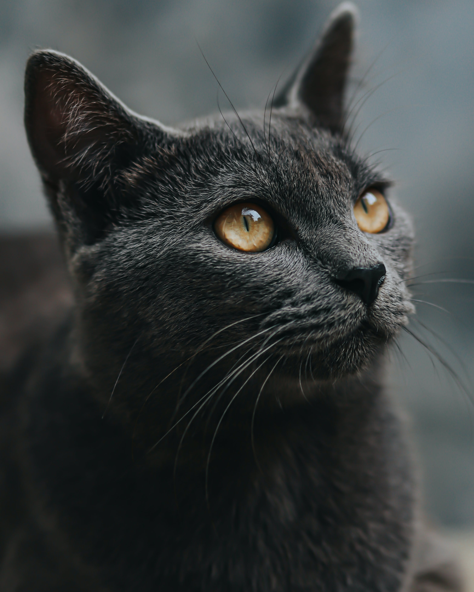

Hello, my name is Andrej Jovanoski. I am graduated physiotherapist.
First i go to the secondary school "Chede Filiposki" 2010-2014
Second i go to the college, bachelor's degree, graduated physiotherapist "St. Kiril and Metodij" 2014-2017
2017-2019 HC Tinex Prolet 25 employers, graduated physhiotherapist
2017-ongoing Macedonian Basketball federation 25 employers, graduated physhiotherapist
2019-2020 - HC KL7 35 employers, graduated physhiotherapist
2020-2021 - HC Kisela Voda 20 employers, graduated physhiotherapist
2021-ongoing - BC Rabotnicki 40 employers, graduated physhiotherapist
Skills list:
- Kinesiotherapy
- Physiotherapy
- Taping
- Kinesiotape
- Bandaging
- Cryotherapy
2019 Basketball championship until 20, Men, Oradea, Romania,4th place
Hobbies
Contact me